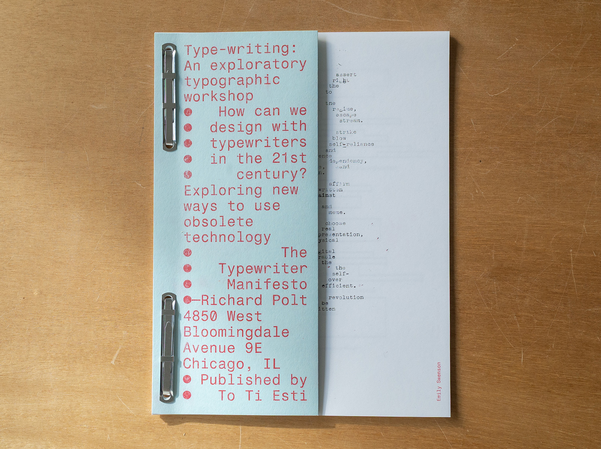
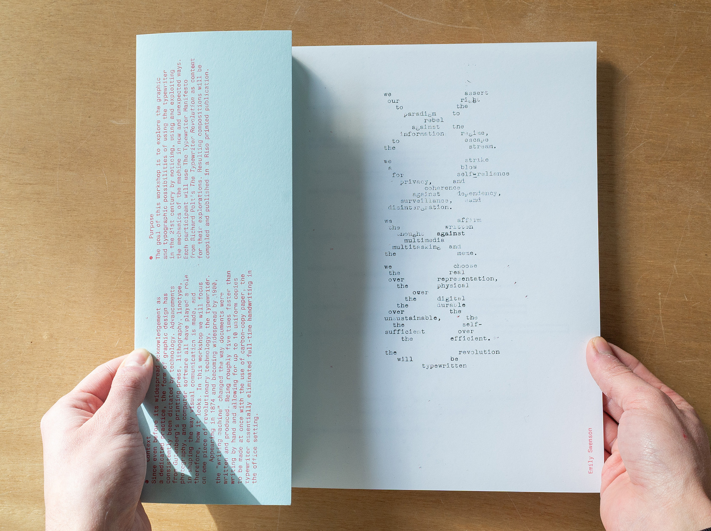
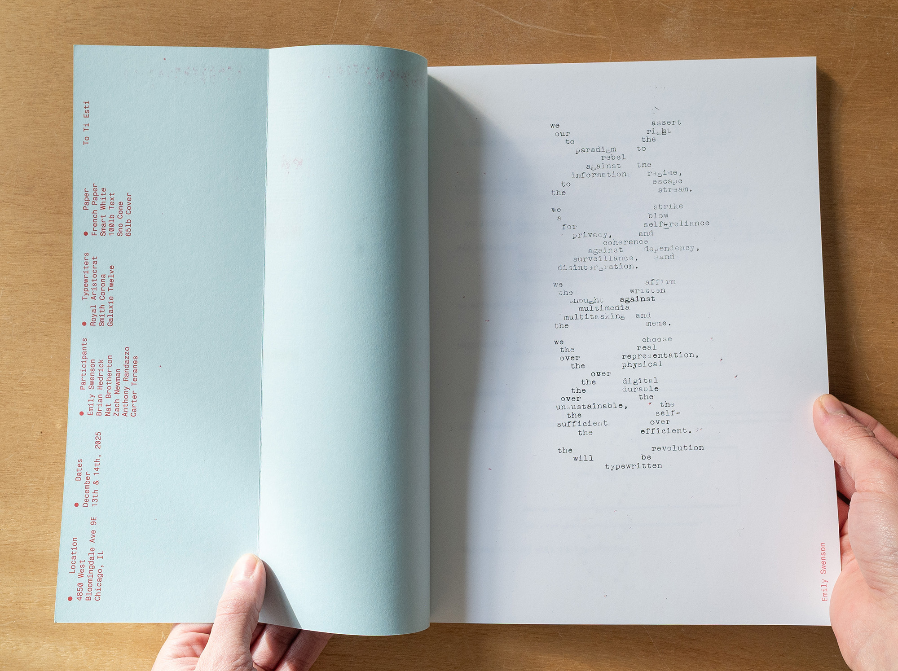
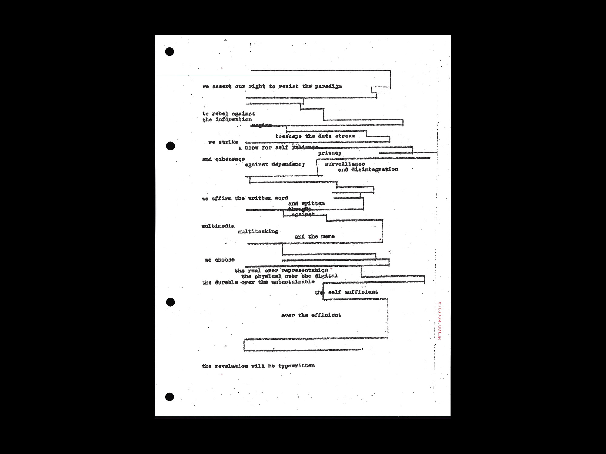
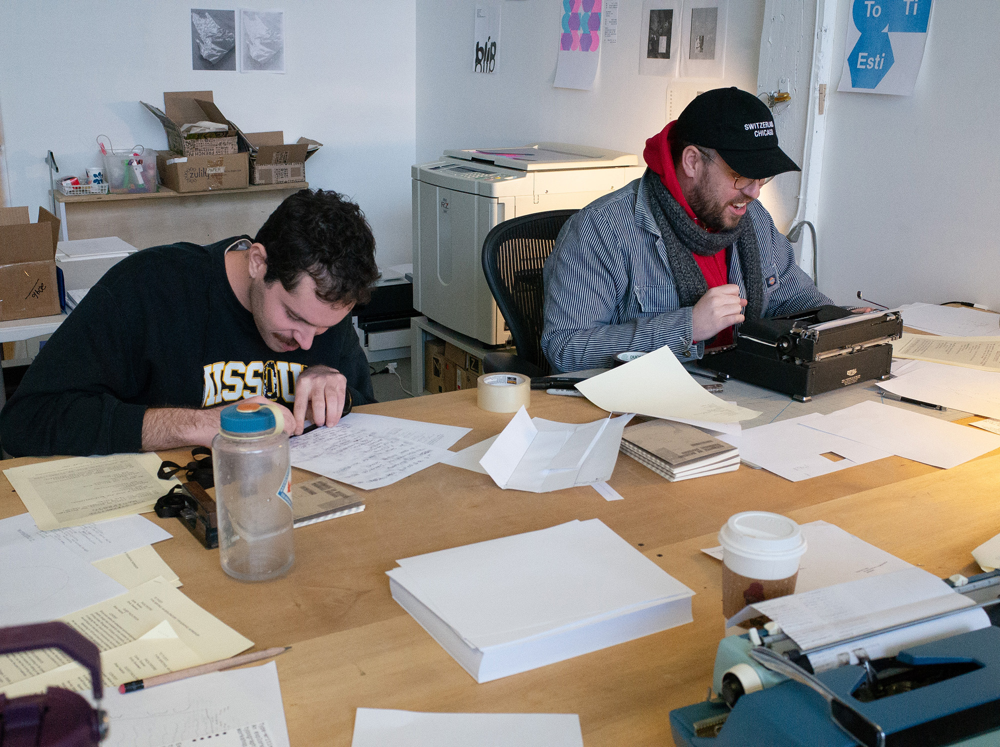

Type-Writing: An Exploratory Typographic Workshop
The workshop explored the typewriter as both subject and tool, inviting participants to experiment with its mechanical limitations as generative constraints for design. Using The Typewriter Manifesto by Richard Polt as source material, attendees produced typographic compositions that embraced rhythm, repetition, overprinting, and imperfection. The two-day session culminated in a Riso-printed publication compiling participant work.
Below is an excerpt from the workshop informational material explaining the context and purpose of the project.
Context
Since even before its widespread acknowledgement as a dedicated practice, the form of graphic design has consistently been dictated by technology. Advancements from Gutenberg’s printing press, lithography, linotype, photography, and computer software all have played a role in shaping the way visual communication is made, and therefore, how it looks. In this workshop we will focus on one piece of revolutionary technology, the typewriter.Appearing in 1874 and becoming widespread by 1900, the “writing machine” changed the way documents were written and produced. Being roughly five times faster than writing by hand and allowing for up to 10 uniform copies to be made at once with the use of carbon-copy paper, the typewriter essentially eliminated full-time handwriting in the office setting.
Purpose
The goal of this workshop is to explore the graphic and typographic possibilities of using the typewriter in the 21st century by noticing, using and exploiting the mechanics of the machine in new and unexpected ways. Each participant will use The Typewriter Manifesto from Richard Polt’s The Typewriter Revolution as content for their explorations. Resulting compositions will be compiled and published in a Riso printed publication.
Designers
Carter Teranes
Brian Hedrick
Emily Swenson
Anthony Randazzo
Nat Botherton
Zach Newman
Year
2025